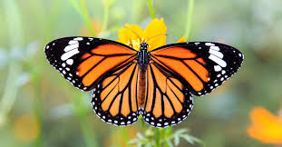
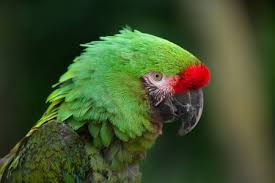

Top 10 animales en peligro de extinción: |
Colores Verdaderos El estilo lo es todo cuando vives en un grupo tan grande como el de un mandril. Con una tropa de 1.300 ejemplares una vez registrada en los bosques de Gabón, se cree que los mandriles forman los grupos sociales más grandes de primates no humanos. Con sus llamativas caras y ojos, han evolucionado para exhibir la coloración más espectacular de cualquier especie de mamífero, cuya intensidad indica su estado social y sexual. Lamentablemente, no es solo su apariencia lo que es atractivo. La carne de mandril se considera un manjar en el oeste de África, y es parte de un comercio en crecimiento, con toneladas de carne de animales silvestres introducidas de contrabando en el oeste de Europa a diario. Debido a que los mandriles viven en grupos tan grandes, gran parte de su población puede caer en el comercio en auge en una sola cacería. La tala y la agricultura también están limitando sus lugares de refugio, por lo que estos notables animales necesitan urgentemente una protección más eficaz. |
Escapando Los osos polares dependen del hielo marino para atrapar su presa. Se abalanzan sobre las focas cuando emergen a través de sus respiraderos y las acechan mientras toman el sol al aire libre, pero el hielo se está derritiendo a medida que nuestro clima se calienta. En los trece inviernos que siguen al año 2003 se produjeron las trece extensiones de hielo más pequeñas registradas por los satélites. Las temporadas de caza son cada vez más cortas, y por cada semana de hielo que se pierde en los inviernos del Ártico, los osos polares pierden alrededor 7 kg de grasa. |
Resistencia Dorada Localizado a lo largo de las montañas del centro de China, el mono dorado de nariz chata soporta algunos de los inviernos más duros de cualquier primate no humano puede soportar. Su capa de pelo larga y suave lo protege de los vientos helados mientras que su rostro desnudo soporta la mayor parte del frío. Ha sido cazado durante mucho tiempo por su hermoso pelaje, pero desde principios de la década de 1990, la caza furtiva se ha reducido gracias a una mayor protección del gobierno. No obstante, su número ha seguido disminuyendo a medida que se despejaron sus bosques para la obtención de madera y la creación de tierras de cultivo. Además, el turismo se ha expandido al amparo del crecimiento económico de China, y las manadas de monos se han visto fuertemente hostigadas y perseguidas para ser vistas. Tan solo alrededor de 120 ejemplares de esta especie sobreviven en la actualidad en estado salvaje. |
Un grito de ayuda Solo queda el 10% de los bosques históricos de Madagascar, los cuales sustentan a estos lémures en peligro crítico. Con una gran pasión por el néctar, se cree que los lémures son los polinizadores más grandes del mundo. A diferencia de la mayoría de los primates, dan a luz a grandes camadas, por lo que prosperan en cautiverio, donde las tasas de supervivencia son altas. Pero debido a que han sido criados a partir de un grupo genético muy pequeño, las reintroducciones posteriores entrañan muchas complicaciones. Su conservación se logrará cuando simplemente los dejemos en paz en un dosel de selva virgen. |
Un lento progreso La tortuga más rara del mundo tarda 15 años en alcanzar la edad de cría. Esto hace que cada huevo robado, o cada árbol o arbusto talado sea un revés aplastante para esta especie al borde de la extinción. Se creía que la tortuga angonoka - Astrochelys yniphora- ya había desaparecido, pero en 1984 fue redescubierta en el noroeste de Madagascar. Durrell Wildlife Conservation Trust lanzó rápidamente un programa de cría en cautividad. En 1998, el único hábitat la tortuga angonoka fue nombrado oficialmente Parque Nacional -el primero creado para proteger una sola especie- y la Fundación Durrell logró liberar a cien individuos en libertad. Su redescubrimiento de también lo convirtió en uno de los animales más deseables del mundo para los vendedores ilícitos de especies raras y conchas ornamentales; cada éxito conservador se ha logrado en una lucha constante con este poderoso comercio ilegal internacional. Recientemente, la caza furtiva se ha intensificado, y todas las liberaciones en la naturaleza se han suspendido mientras los guardias luchan para asegurar el área, que ahora contiene solo unos pocos cientos de individuos. |
Decadencia silenciosa Se estima que más de un millón de pangolines se comercializaron ilegalmente entre 2007 y 2017, convirtiéndolos en los mamíferos más comercializados del mundo. Son tímidos, sin dientes, en su mayoría nocturnos, y se quedan inmóviles cuando tienen miedo. Envueltos por una armadura de escamas de queratina, esta defensa los protege de sus depredadores históricos, pero los humanos simplemente pueden recogerlos y llevárselos. Los pangolines poseen una herencia evolutiva única, habiéndose separado de otros mamíferos mientras los dinosaurios todavía caminaban la tierra. Hay cuatro especies en África y cuatro en Asia; todos son ahora vulnerables a la extinción y dos están en peligro crítico. |
Un éxito relativo En la década de 1980, el gobierno chino lanzó una de las campañas de conservación más grandes y caras de la historia para salvar al panda gigante. Se prohibió la caza furtiva, se protegieron los bosques y se logró el reconocimiento internacional de la difícil situación del panda. El esfuerzo eventualmente llevó a un aumento en la población silvestre del panda gigante, y en 2016, la especie fue finalmente clasificada como vulnerable. Muchos grupos se mostraron jubilosos y vieron la reclasificación como un triunfo del trabajo duro y la acción del gobierno; sin embargo a otros les preocupaba que esta nueva clasificación resultara engañosa, y pudiera disminuir la financiación e investigación.De hecho, el futuro del panda gigante sigue siendo precario: a día de hoy solo hay dos mil individuos viviendo en la naturaleza, dispersos en varias poblaciones aisladas. Además, su fuente de alimento, el bambú, es muy sensible a la temperatura, y los bosques de bambú de China pronto serán extensamente dañados por el cambio climático. |
|  |
Perdida entre la multitud Las mariposas monarca se alimentan de algodoncillo, una planta tóxica que las hace venenosas ante posibles depredadores. Sin embargo los herbicidas están destruyendo millones de hectáreas de esta fuente de alimento esencial para las mariposas cada año. Estos inmensos y majestuosos enjambres están compuestos por individuos frágiles, que se enfrentan un entorno cambiante y un futuro profundamente incierto.Cada invierno, cientos de millones de insectos realizan un viaje de varios miles de kilómetros, a pesar de que cada uno pesa menos que un billete de euro. En uno de los fenómenos más espectaculares del mundo natural, las mariposas monarca migran desde Canadá y el norte de los Estados Unidos a México y California, donde cubren los bosques de pinos en naranja, blanco y negro. |
|  |
Perdido en la traducción Los guacamayos militares tienen algunas de las voces más fuertes de los bosques de Sudamérica. No conocen sus llamadas de forma innata, sino que las aprenden de sus padres y compañeros, lo que da lugar a dialectos locales que distinguen a un grupo de otro. En la naturaleza, los guacamayos militares permanecen monógamos de por vida, y como mascotas son aves excepcionalmente leales. Su belleza y buena compañía los pone en gran demanda de la industria de mascotas, pero muchos comerciantes los toman de la naturaleza, en lugar de criarlos en cautiverio.Los guacamayos militares tienen algunas de las voces más fuertes de los bosques de Sudamérica. No conocen sus llamadas de forma innata, sino que las aprenden de sus padres y compañeros, lo que da lugar a dialectos locales que distinguen a un grupo de otro. En la naturaleza, los guacamayos militares permanecen monógamos de por vida, y como mascotas son aves excepcionalmente leales. Su belleza y buena compañía los pone en gran demanda de la industria de mascotas, pero muchos comerciantes los toman de la naturaleza, en lugar de criarlos en cautiverio. |
Perdido entre las montañas Los leopardos de las nieves, ocultos entre las áridas montañas de Asia Central, son conocidos desde hace tiempo como uno de los felinos más esquivos del mundo. En 2016, una investigación con tecnología de rastreo por GPS mostró que un leopardo de las nieves necesita hasta 207 kilómetros cuadrados de territorio para sobrevivir, lo que hace que casi el 40% de las áreas protegidas de su hábitat resulten demasiado pequeñas para mantener incluso una pareja reproductiva. El calentamiento global, que ha afectado al Himalaya unas tres veces más intensamente que a otros lugares del mundo, está desplazando os bosques hacia las laderas y reduciendo los hábitats del leopardo de las nieves. También, los agricultores están alimentando al ganado y plantando cultivos cada vez a mayor altura, lo que aumenta las posibilidades de conflicto entre los leopardos de las nieves y los humanos. El Acuerdo de París 2015 fue un paso adelante para la conservación de estos felinos legendarios, pero hasta que sus tierras y su modo de vida estén protegidos, es probable que sigan en declive. |